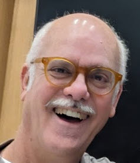

Welcome
I am a Professor of Business Analytics at DePauw University. I was born in Camagüey, Cuba and grew up in Miami, where I graduated from Columbus High in 1978. I earned my B.A. from New College in 1981 and Ph.D. in Economics from the University of North Carolina at Chapel Hill in 1985. I was at Wabash College for many years, including sabaticals as a Fulbright Scholar at the Pontificia Universidad Catolica Madre y Maestra in the Dominican Republic in 1991, a year at the University of Costa Rica in 1998, and a voyage around the world with Semester at Sea in the fall of 2005 (hear Alan's song and read the lyrics). I spent a year at RMIT in 2012 in the beautiful city of Melbourne, Australia. My last sabbatical was split between another sail with SAS in Fall 2019 and Malta in the winter of 2020 -- until covid-19 hit and we barely made it home..
My curriculum vitae, with complete contact information, is available here: BarretoCV.pdf.
I created this web site to share information about my work and interests, available in the links in the top right corner.
This photo of my kids is really old, but it brings back nice memories and makes me smile.
Last Updated: 2 Jun 2025